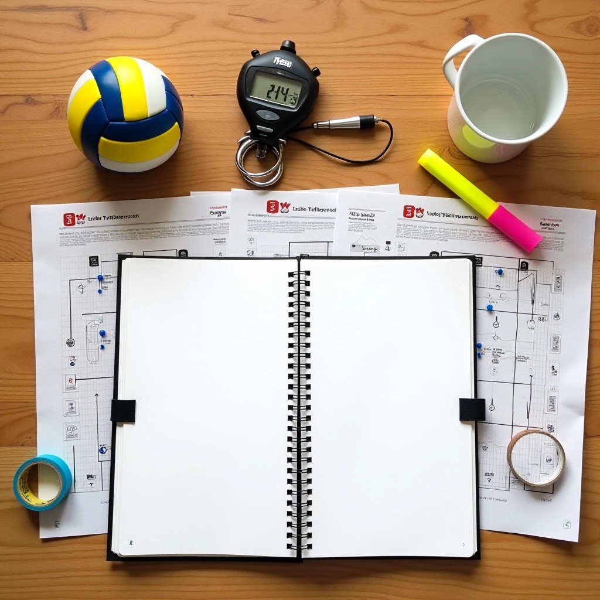
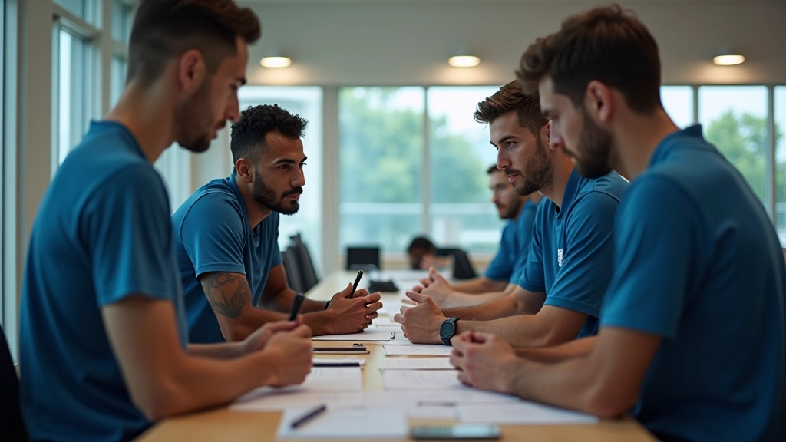

أساسيات الحركة والتمركز الدفاعي
شرح مفصل للمواقع الأساسية للاعب الليبرو والحركات الصحيحة والتمركز حسب نوع الهجوم المتوقع.
سبتمبر 2026

نحن نعمل على توفير معلومات دقيقة وعملية عن مهارات الليبرو والمواقع الدفاعية في الكرة الطائرة
فريق متخصص يقوم بالبحث المعمق والتحليل الشامل لأفضل الممارسات التدريبية. نختبر كل معلومة بعناية ونحدثها بانتظام لتعكس أحدث التطورات في اللعبة.
عملية منظمة لضمان جودة وموثوقية كل محتوى
نختار المواضيع بناءً على احتياجات اللاعبين الفعلية والتحديات التي يواجهونها في الملعب. ندرس كل موضوع بعمق من خلال مراجعة شاملة للمصادر الموثوقة والخبرات الميدانية.
نتحقق من التفاصيل التقنية والتكتيكية بعناية فائقة. كل معلومة تُختبر وتُراجع قبل النشر للتأكد من الدقة والوضوح والفائدة العملية.
نحافظ على تحديث المحتوى بانتظام ليعكس التطورات الحالية في اللعبة والأساليب المثبتة فعليًا. المحتوى القديم يُراجع ويُحسّن بناءً على أحدث المعايير.
نكتب بلغة واضحة وصريحة، بعيدًا عن المبالغات والمصطلحات المعقدة غير الضرورية. كل شيء موجه للممارس الفعلي، سواء كان لاعبًا أو مدربًا.
ما نركز عليه في محتوانا التحريري
دراسة مفصلة للمواقع الدفاعية المختلفة وكيفية التمركز الصحيح حسب نوع الهجوم المتوقع والتشكيلات المختلفة.
تحليل شامل لحركات الاستقبال من الحالات الصعبة والموارب والحفر والكرات المنخفضة والمرتفعة بشكل غير متوقع.
تطوير مهارات التنبؤ بالهجمات والقراءة السريعة للعبة والتواصل مع الفريق والاستجابة السليمة للمواقف المختلفة.
شرح التشكيلات الدفاعية والتغطية الاستراتيجية والتعاون مع باقي اللاعبين والتكييف مع أساليب الخصم المختلفة.
خطط تدريبية عملية وتمارين محددة تطور المهارات الأساسية والمتقدمة مع التركيز على الحالات الواقعية من المباريات.
القيم التي توجه عملنا وتشكل محتوانا
"نحن نؤمن أن الموثوقية تبنى من خلال الشفافية والدقة. لا نبالغ في الادعاءات ولا نختبئ خلف المصطلحات المعقدة. ما تقرؤه هنا يعتمد على البحث الجاد والتجربة الفعلية والالتزام بتحديث المعلومات باستمرار."
— فريق دفاع الليبرو التحريري
كل معلومة تُختبر وتُراجع قبل النشر. نركز على الحقائق والتفاصيل الفعلية بدلاً من الكلام العام.
نكتب بلغة مباشرة وسهلة الفهم. لا نستخدم مصطلحات معقدة إلا عند الحاجة وبشرح واضح.
المحتوى يُراجع ويُحسّن بانتظام. نتابع التطورات الحديثة ونعدّل المعلومات عند الحاجة.
كل شيء موجه للممارس الفعلي. لا نكتب من أجل الكتابة — نكتب لأن المعلومة مفيدة وضرورية.
فريقنا التحريري يعمل ضمن مشروع دفاع الليبرو للتدريب الرياضي، وهي منصة متخصصة في تقديم معلومات عملية وموثوقة عن مهارات الليبرو والمواقع الدفاعية في الكرة الطائرة. نسعى لأن نكون مصدرًا موثوقًا للاعبين والمدربين الذين يريدون تحسين أدائهم الدفاعي وفهم أعمق للعبة.
نحن ملتزمون بتقديم محتوى شفاف وموثوق يعتمد على الخبرة الميدانية والبحث المستمر. كل مقالة، كل دليل، وكل معلومة تعكس التزامنا بالجودة والصدق.
العودة إلى الصفحة الرئيسية
اطلع على المحتوى الذي ننشره
شرح مفصل للمواقع الأساسية للاعب الليبرو والحركات الصحيحة والتمركز حسب نوع الهجوم المتوقع.
سبتمبر 2026
كيفية تطوير مهارات التنبؤ والقراءة السريعة للعبة والاستجابة الفعالة للمواقف المختلفة.
سبتمبر 2026
تحليل شامل لحركات الاستقبال المتقدمة والتعامل مع الحالات الصعبة والكرات غير المتوقعة.
سبتمبر 2026
شرح التشكيلات الدفاعية المختلفة والتعاون مع الفريق والتكييف مع أساليب الخصم.
سبتمبر 2026
نود أن نسمع منك. إذا كان لديك أسئلة حول محتوانا أو اقتراحات لتحسينه، تواصل معنا مباشرة.
تواصل معنا